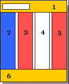
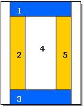

Тема, мета, місце розташування WEB-застосунка та місце звітного HTML-документу
Тема: ВЕРСТКА HTML-ДОКУМЕНТУ. БЛОКОВА ВЕРСТКА. ВЕРСТКА ЗАСОБАМИ CSS та FLEXBOX.
Мета: Придбати практичні навички роботи верстки сторінок засобами CSS, верстки на основі плаваючих елементів, з’ясувати переваги та недоліки типів макетів веб-сторінок придбати практичні навички роботи верстки сторінок засобами CSS та FLEXBOX
Завдання 1
Завдання 2
Засобами HTML та CSS виконати Завдання №2 у звітному HTML-документі , а саме:
• Розмітку за допомогою таблиці (номер варіанта – остання цифра у списку групи)
o Фіксована таблична верстка
o Гумова таблична верстка
• Розмітку за допомогою блоків (плаваючих елементів) (номер варіанта – остання цифра у
списку групи + 1)
o Фіксована блокова верстка
o Гумова блокова верстка
Фіксована таблична верстка
Варіант 6
| 1 | |||
| 2 | 3 | 4 | 5 |
| 6 | |||
Гумова таблична верстка
| 1 | |||
| 2 | 3 | 4 | 5 | 6 |
Фіксована блокова верстка
Варіант 7
Гумова блокова верстка
Завдання 3
ЕФЕКТИВНІ МЕТОДИ НАВЧАННЯ
100% ЗАСВОЄННЯ МАТЕРІАЛУ
Починаючи з 2016 року, ми відточували наші методи навчання і знайшли найбільш дієвий спосіб, який дає можливість студентам опановувати програму краще і в більшому об’ємі.
- Лекційний матеріал подається окремо. Це дає змогу зосередитись на ознайомленні з ним, не відволікаючись на виконання будь-яких дій.
- Практичні заняття проходять в окремі дні та включають завдання по попередній лекції. При цьому частина завдань не містить абстрактних умов. Це дає змогу чітко закріпити пройдений матеріал.
- Як результат поєднання попередніх факторів ви опануєте теоретичну частину, закріпите її на практиці у двох різновидах завдань.
Під час створення програми навчання ми спирались на новітні технології та рекомендації наших партнерів, щоб після закінчення навчання ви змогли швидше влаштуватись на роботу.
Наші курси програмування
ОБЕРИ НАПРЯМОК ПРОГРАМУВАННЯ

JAVA COMPLEX
Детальніше

JAVASCRIPT COMPLEX
Детальніше

PYTHON COMPLEX
Детальніше

QA/QC ТЕСТУВАННЯ
Детальніше
РОБОТОДАВЦІ ЗАДОВОЛЕНІ
НАШИМИ ВИПУСКНИКАМИ